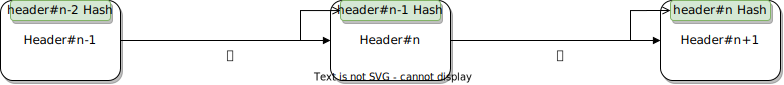

- Arthur Santos
- Leonardo Razovic
- Marijo Radman
- Sam Ruberti
- Tom Pignard
(Not financial advice)
Outline
- Introduction
- Economics
- Cryptography
- Governance
- Guarantees
- Structure
- Threat Models
- Conclusion
Introduction
🥑 Core offerings
NEAR is a community run blockchain-cloud built on Rust that allows developers to sustainably build applications which secure high value assets while making them performant and "infinitely scalable."
🤷†What can users do?
- Developers can build services in a permissionless environment and receive rewards when consumers interact with their applications.
- Token holders can interact with applications with fast transaction speeds and low fees, and they can stake their assets to earn rewards through a Proof of Stake mechanism.
❄ Uniqueness
- The economic model is built around the devloper first and introduces a deflationary mechanism for the token - a large portion of the transaction fees are burned.
- NEAR is a sharded, proof of stake, layer-one blockchain and claims to be infinitely scalable.
👠What we don't like
NEAR took a lot of investments giving investors 24% of the tokens in addition to another 12% in community sales. This amount is unsual. There is also no lockup schedule for investors and only 24-36 months vesting schedule. The investors therefore do not have a long time incentive for the project and it puts selling pressure on the entire ecosystem in the early stage. In addition, the inflation is not put on the investors, which means that the community pays for the block rewards. We feel that the investors got a free ride and their rewards were unfairly balanced.
👠What we don't like
The guard against the Tragedy of the Common good is only as strong as the current inflation rate. With 2 billion transactions per day the effective inflation rate would be -2.3%. We would add a linear payment mechanism to developers based on storage size if inflation dropped below 1% to make storage a little more “painful.†The performance of the application itself would need to be exceptional to justify its existence in storage.
✠Digital Signatures
- NEAR supports accounts derived from a public/private key scheme based on either curve SECP256K1 or Ed25519 (dalek library).
- The support of SECP256K1 is useful to maintain some compatibility layer with Bitcoin & Ethereum.
- Most protocol operations effectively require Ed25519 to be used.
📮 Accounts
- Public addresses are referenced my a DNS-like name by default (e.g. alice.near)
- Multiple key pairs can be associated with an single account.
- FunctionCall keys grant privileges to key pairs for specific functions with predefined max token allowances. (Similar to Stash / Controller accounts in Substrate, but more granular)
#️⃣ Hash Functions
- SHA2-256 is used for most data structures.
- This hash function is battle-tested, but slower than Blake2/3.
- Blake2b is used in the new randomness beacon, but...
- It is not clear why they do not use Blake2 in all cases.
🌳 Merkle-Patricia Tries
Merkle-Patricia tries are used to record the chain state
🔬 Merkle Proofs
- Cannot be tampered with without changing the root of the tree.
- The tree roots are included into the blocks, producing a compact commitment for the whole state data.
🔗 Hash Lists
The chain itself is a hash list, where each block refers to its parent by including the parent's header hash in its own header.
📠Erasure Coding
- Erasure coding is in the consensus itself.
- Each validator of a shard sends erasure coded data to validators of other shards.
- Ensures that only 1/3 of the validators can reconstruct data for all shards.
- Data availability is enforced at consensus level by forcing validators to check whether the data is available before they accept a block.
✍✍✍ Signature Aggregation > ✍
- Block producers collect signatures of all validators and aggregate them with BLS.
- Aggregated signatures are published in a Merkle Trie of the individual signatures, and signed using ECDSA.
- Nodes that are syncing chain data can choose to skip the validation of individual signatures and merely verify the ECDSA signature from the validator (if the validator has not been challenged or slashed)
🔠ğŸ²ğŸ² Verifiable Random Function
- VRFs are used in the new random beacon to generate randomness that's both unpredictable and unbiasable.
- The randomness beacon is based on BLS signatures, and allows any given subset k < n of n nodes to produce randomness without any node set of size k - 1 being able to learn any information about the randomness beacon.
🧠Succint Non-interactive ARguments of Knowledge (SNARK)
- NEAR relies on fishermen to ensure the security of shards (more later).
- This is a fraud-proof approach that is cheap and easy to implement but the tradeoff is the negative impact on liveness and speed of the protocol due to the challenge period.
- NEAR plans to switch to a validity proof where each chunk producer would provide a SNARK attesting to the chunk validatity.
👠What we like
- The plan for bleeding edge primitives (SNARKS)
- Erasure coding to solve data availability issues - using a set of notaries keep long term data.
- Unbiased and unpredictable randomness for every validator selection using VRF (vs round-robin).
- The use of BLS aggregation of the signatures, which is elegant and efficient for a large number of validators. The final list is signed by ECDSA. Fast.
👠What we don't like
- Most hashes are created from SHA2-256, which is older and slower than Blake2b.
- The current challenge/response mechanism affects the protocol liveness.
- The use of BLS aggregation is optimal for large signature lists, but there are currently only 100 validators. If the number of validators increases, the Schnorr interactive aggregation phase may become unpractical.
🛠Off-Chain Governance
NEAR is currently maintained by a centralized entity that makes decisions off-chain. There are plans to create a governance body on-chain in the future, but they argue that a democracy would inhibit initial development velocity.
💂 Reference Maintainer
- All discussions regarding proposals take place in the NEAR Governance Community.
- A Reference Maintainer is selected to oversee technical responsibilities.
👠What we like
- At least the NEAR Governance forum is public and no registration is required. (Unlike Discord, etc).
- They recognize that the current situation is not ideal.
- Without a democracy decision making speed is fast.
- The code is open source. Terrible decisions can be corrected with a hard fork.
👠What we don't like
- The Reference Maintainer is elected by NEAR Foundation and is no different than a Web 2.0 company.
- The Foundation makes all final decisions, but has obligations to their investors and have their own self-interests.
- Voting is opaque and not verifiable.
🧩 Shards
- Consensus across all nodes for all shards is achieved through NEAR's Nightshade algorithm.
- Nightshade assumes that all of the shards combine to produce a single block, and each block “contains†all the transactions for all the shards.
- There are no shard chains in Nightshade. All block producers and validators are working together to create a single blockchain, which we refer to as the Main Chain.
🧩 🧩 > 🤠Consensus
- Consensus is achieved via the heaviest chain.
- Block producers (BPs) collect signatures from other BPs and validators attesting to the previous block.
- The cumulative stake of all signers determines the weight of a block.
- For each block (and every shard) there is one BP who is responsible to produce a chunk.
- A chunk contains the list of the transactions and the Merkle root of the resulting state.
🏁 Finally
Finally a header is created for all chunks containing the merkle root of the final state.
🧩 One more thing on Shards...
- Blocks are produced more-or-less every second regardless if individual shards have produced its chunk for that specific block height.
- If a transaction needs to affect more than one shard, it needs to be consecutively executed in each shard separately.
 Doomslug
Doomslug
- Doomslug is a protocol to assure honesty of validators but slashing bad actors.
- Doomslug establishes finality and is irreversible unless at least one participant is slashed.
🗠Architecture
Contract calls are executed inside the WASM runtime (security). Other calls are executed in the native client.
🧱 Block
The block is mainly composed of a BlockHeader and a vector of chunks from the different shards.
#[derive(BorshSerialize, BorshDeserialize, Debug, Clone, Eq, PartialEq)]
pub struct BlockV2 {
pub header: BlockHeader,
pub chunks: Vec{ShardChunkHeader},
pub challenges: Challenges,
pub vrf_value: near_crypto::vrf::Value,
pub vrf_proof: near_crypto::vrf::Proof,
}
💆‍♂️ Header
The header contains the hash of the previous block, the signature of the block producer, the hash of the current block, and some metadata structs.
pub struct BlockHeaderV3 {
pub prev_hash: CryptoHash,
/// Inner part of the block header that gets hashed, split into two parts, one that is sent
/// to light clients, and the rest
pub inner_lite: BlockHeaderInnerLite,
pub inner_rest: BlockHeaderInnerRestV3,
/// Signature of the block producer.
pub signature: Signature,
/// Cached value of hash for this block.
pub hash: CryptoHash,
}
🧾 Receipts
All cross-contract communication in NEAR happens through Receipts. The STF does the following:
- Snapshot the initial state.
- Apply validator accounts update, if available.
- Convert new signed transactions into the Receipts.
- Process Receipts.
- Check that incoming and outgoing balances match.
- Finalize trie update.
- Return ApplyResult
👠What we like
- WebAssembly for the runtime allows for excellent performance.
- Developers can code in any language that compiles to WASM, including AssemblyScript (A TypeScript-like language)
- Block creation and Doomslug are divided in a hybrid consensus. Combining these two processes enables NEAR to build blocks quickly while allowing the slower finality mechanism to operate in a separate process to finalise blocks without the risk of slower transactions.
👠What we don't like
It is possible for Nightshade to have too many receipts that target a shards in a specific block. The time it takes from the creation of the receipt to the application can be longer and longer if the system is under an uneven load for an extended period of time.
👠What we don't like
A chunk can be invalid and therefore a challenge period was implemented. In particular, the destination shard of any cross-shard transction cannot be certain the originating shard chunk or block is final until the challenge period is over. The existence of the challenge protocol (Fisherman) creates a new vector of attacks when malicious nodes spam with invalid challenges.
👼 Liveness
- Liveness is maintained if more than 1/2 of validators are online.
- The block producer who's most ahead in time is the witness.
- If all block producers of a specific block in a specific shard are online for more time than the time necessary for the block creation, we can assume that block will be created in a finite time.
⚖️ Fairness
- Validation is designed to run on hardware that is accessible by all.
- NEAR is a permissionless blockchain, so anyone can deploy an application.
- VRF is used to ensure that validator selections are unbiased.
🦺 Safety
- Nightshade's Finality Gadget requires more rounds of communication, but fewer blocks built on top of it till it's considered safe.
- Unless there's at least one block producer who's considered dishonest a produced block cannot be reversed.
- A finalized block just can be reversed if more than 30% of the producers are considered dishonest.
🧲 Censorship Resistence
- NEAR is opperated by the NEAR Foundation and is exposed to censorship and government interference.
- Token holders have little resistence to censorship from the NEAR Foundation, who decides everything.
- Many guilds exist on NEAR. They are communities with shared interests and a lot of token power. They can form validators to join in on consensus.
👠What we like
- Doomslug provides liveness guarantess even in case where finality stalls due to more than 33% of the validators missing.
- The requirements to run a validator are reasonable, which helps to preserve censorship resistence by allowing censored parties to join the consensus if needed.
👠What we don't like
- The number of validators is very small (100) and makes the network partially centralized and weakens censorship resistence.
- The NEAR foundation is still too powerful. This may result in censorship.
🎖️ Byzantine generals problem
- In a distributed environment, with potentially faulty actors, reaching a consensus without the help of a central authority.
- Nightshade addresses the Byzantine generals problem
- Nightshade provides similar guarantees as PBFT, but suffers the same drawbacks
🏁 Sybil Attack
- In a pseudonymous environment, nothing prevents an adversary to create multiple accounts.
- Block production and finality guarantees are based on a given proportion of consensus participants being honest.
- It is crucial to prevent a malicious actor to secure many validator slots.
🏁Sybil Attack
- Near relies on the fact that a sufficient amount of tokens need to be bounded for a validator to get a slot.
- As long as the token maintains sufficient value, it is expensive to create accounts that are funded enough to participate to the protocol.
💥 51% Attack
- In a proof-of-stake algorithm, the security of the network depends on the amount of tokens that get staked (bonded) by the participants.
- The security of the system can then be assessed in terms of a financial quantity (e.g. USD) depending on the price of the token.
🔫 Finality
- In Near, any attack that takes over the finality mechanism is fatal.
- Nightshade requires 2/3+1 of the validators to be honest to finalize a block.
- The theoretical security threshold is half in case of a network partition of the honest validators (c.f. PBFT).
- The theoretical security is then equal to the cost of taking other the 1/3 + 1 least bonded validators.
🧱 Block production
- Before finalization the security level is equal to the stash value of the block producer.
- After finalization, it is equal to 1/3 of the stake.
- Liveness badly impacted by the lack of explicit punishment for offline behaviour.
✨ Shard security
- Within one shard, if the majority of the validators gets corrupted, the shard itself can be fully taken over.
- Validators on other shard are only operating a light-client equivalent verification on the corrupted shard.
- Inter-shard transactions from a corrupted shard are dangerous and propagate state corruption.
✨ Shard security
- Fishermen are incentivized to publish onchain challenges attesting from the invalidity of a given block shard.
- In case of a successful challenge, the state is reverted to the one just before the shard corruption.
🫠Adaptive Corruption
- A malicious party can bribe or corrupt only a specific subset of the actors in order to take over the network, or grief other participants.
- A randomness beacon assigns validators to shards makes adapting corruption more difficult.
- "Hidden validators" whose assignment to any given shard is not meant to be released publicly further prevent adaptive behavior.
🫠Adaptive Corruption
- At the main chain level, block producers are operating in following a simple round robin
- Validators are rotated once every epoch (15 hours), so any block that would be challenged within that period would let the set of validators exposed for the rest of the epoch.
🚧 More practical considerations
- Near currently operates only on one shard and with 100 validators.
- No incentive to homogeneize stakes
- The most bonded validator getting bonded for 25,000,000 NEAR tokens and the least bonded being worth only 180,000 NEAR tokens
👠What we like
- Near has tentatively addressed the security challenges of proof-of-stake within a sharded blockchain.
- Consensus separation in block production and finality that favours liveness while maintaining PBFT security.
- The problem of shard corruption spreading out being addressed through a clever use of randomness and hidden validators, with Fishermen being the end guardians.
👠What we don't like
- Stakes of the validators are not homogenized.
- The use of round robin for the main block production.
- In case a bad block is challenged, the validators are uncovered till the end of the epoch.
- No offline penalties apart from the missing reward.